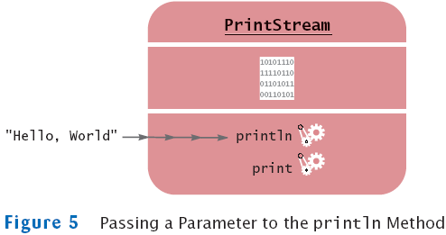

Implicit and Explicit Parameters
- Parameter (explicit parameter): Input to a method. Not all
methods have explicit parameters.
System.out.println(greeting)
greeting.length() // has no explicit parameter
- Implicit parameter: The object on which a method is invoked
System.out.println(greeting)
